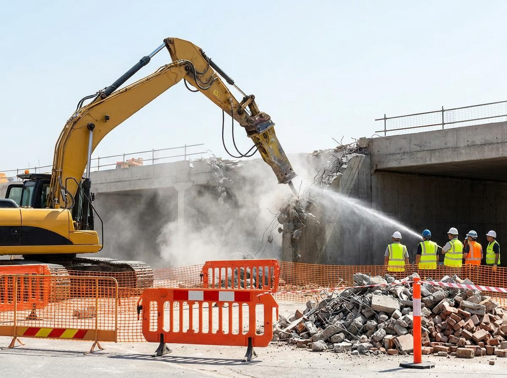
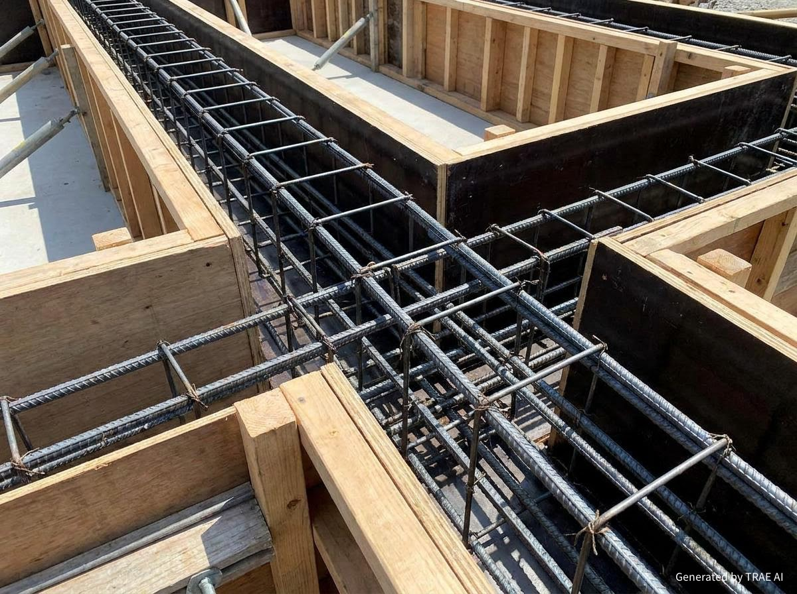
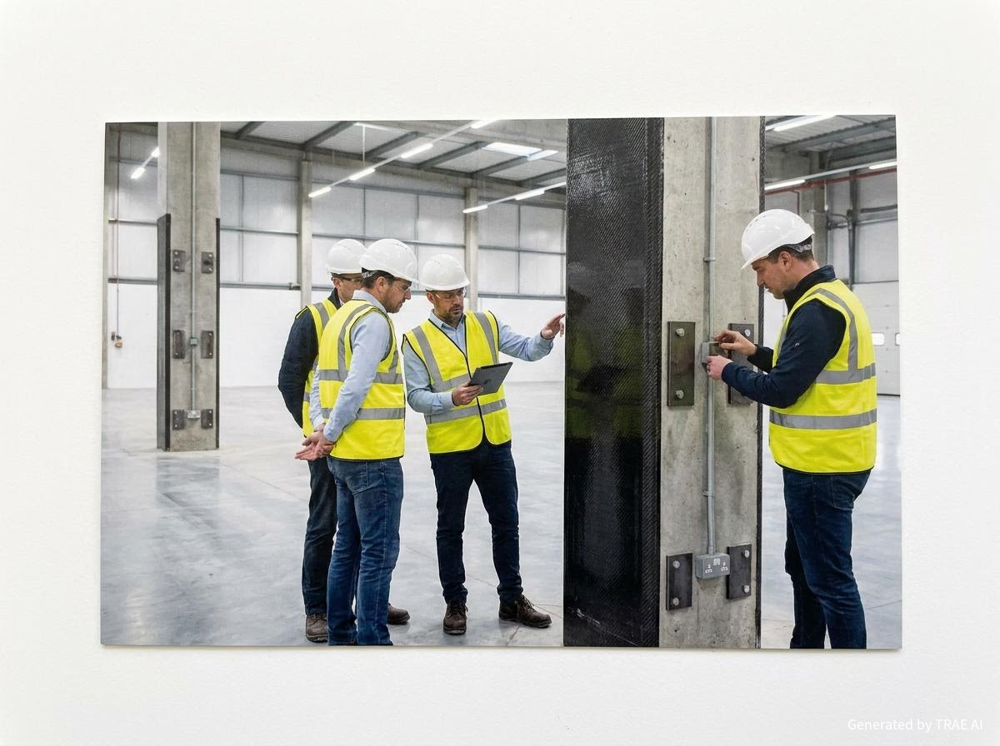
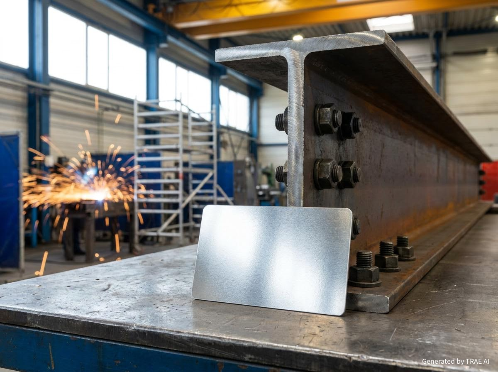
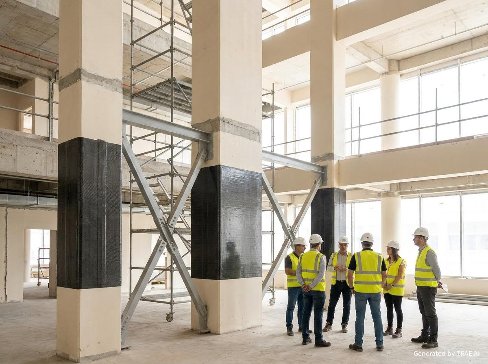
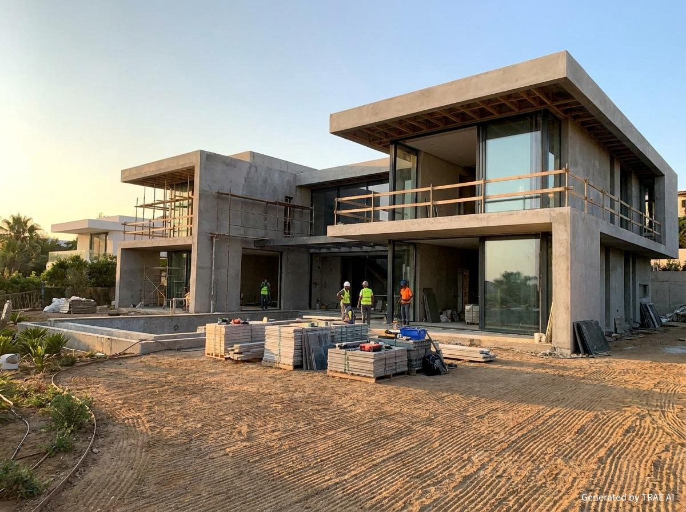
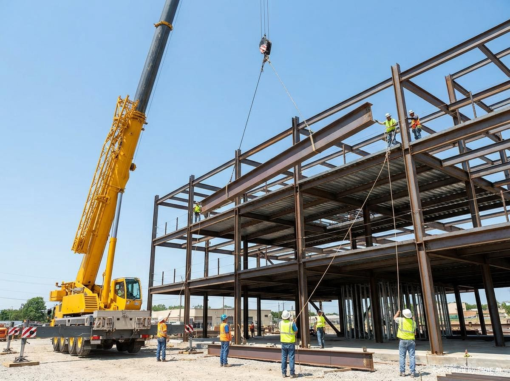

Yeni
Güçlendirmede en sık görülen saha hataları
Uygulama adımlarında küçük sapmalar, performansı büyük ölçekte etkiler. Kontrol listesiyle işin ritmini korumak mümkün.
Sorun, birlikte değerlendirelimAktaşlar Mühendislik
Yeni nesil şantiye disiplini
Aktaşlar Mühendislik; inşaat, restorasyon ve betonarme güçlendirme projelerinde süreci uçtan uca yönetir. Net plan, görünür ilerleme ve yönetmelik uyumu aynı standartta yürür.
Projeleri yalnızca “yapmak” için değil, doğru sırayla ve doğru ölçülerle yönetmek için sahadayız.
İnşaat imalatları, güçlendirme ve yenileme işlerinde; keşif, planlama, uygulama ve teslim adımlarını tek bir disiplin altında toplarız. İşin ilerleyişini görünür kılan raporlama ve net iletişim, işin kalitesi kadar önceliğimizdir.
Her proje için; risk analizi, iş programı ve kalite kontrol adımlarını baştan tanımlarız.
Şantiyenin kritik başlıklarını tek çatı altında topluyoruz: yıkım, imalat, güçlendirme ve yenileme.

Güvenli saha kurgusu, kontrollü tahliye, temiz teslim.
Bilgi al
Taşıyıcı sistem, kalıp-donatı-beton süreçlerinde kalite kontrol.
Bilgi al
Deprem performansı için hesap, uygulama ve denetim bütünlüğü.
Detay
Hızlı montaj, yüksek dayanım, net proje takibi.
Bilgi alMevcut yapıyı koruyan, detay odaklı ve sürdürülebilir yenileme.
Bilgi alİhtiyaca uygun proje seti, onay süreçleri ve koordinasyon.
Bilgi alFarklı proje tiplerinde aynı disiplin: risk, plan, kalite, teslim.
Konut
İmalat standardı, saha güvenliği ve net iş programı.
Güçlendirme
Hesap + uygulama + denetim çizgisinde tutarlı yürüyüş.
Yenileme
Mevcut dokuyu bozmadan yenileme ve detay yönetimi.
Yürüttüğümüz işlerin niteliğini, sahadaki detaylar belirler.



İşi hızlandıran şey “acele” değil, doğru sırayla doğru kontrolü kurmaktır.
Yerinde inceleme, risk değerlendirmesi, kapsam netleştirme.
Metraj, ekip planı, malzeme tedariki ve zaman çizelgesi.
Kritik kontrol noktaları, fotoğraflı ilerleme ve saha güvenliği.
Kontrollü teslim, eksik listesi, sahayı düzenli bırakma.
Yönetmelik uyumu ve saha güvenliği, “ekstra” değil işin kendisidir.
Güçlendirme işlerinde performans hedefi ve uygulama detayları birlikte ele alınır.
Bariyerleme, iş izinleri, KKD disiplini ve çevre güvenliği prosedürleri.
Kontrol listeleri, kritik imalat fotoğrafları ve ölçülebilir kalite adımları.
Karar vermeden önce en çok sorulan başlıklar.
Yerinde keşif ve proje verilerine göre netleşir. Taşıyıcı sistem durumu, maliyet ve süre kıyasını birlikte değerlendiriyoruz.
Kapsam ve saha koşullarına göre değişir; net iş programını keşif sonrası paylaşıyoruz. Süreyi etkileyen kritik nokta tedarik ve koordinasyondur.
Toz kontrolü, bariyerleme, güvenli tahliye rotaları ve alan sınırlandırma ile riskleri azaltıyoruz.
Deprem ve güçlendirme
Yapısal iyileştirmeyi yalnızca uygulama olarak değil, süreç olarak ele alıyoruz: keşif, rapor, proje, uygulama ve kontrol aynı çerçevede ilerler.
Güçlendirme, imalat ve şantiye yönetimi üzerine kısa notlar.
Yeni
Uygulama adımlarında küçük sapmalar, performansı büyük ölçekte etkiler. Kontrol listesiyle işin ritmini korumak mümkün.
Sorun, birlikte değerlendirelimRehber
Saha bariyerleri, toz kontrolü, moloz yönetimi ve çevre güvenliği. Doğru plan, işin süresini de kısaltır.
Teklif isteNot
Donatı, kalıp, beton dökümü ve kür. Her adımda ölçülebilir kaliteyle ilerlemek, sonradan “tamir” ihtiyacını azaltır.
İletişime geçProjenizin türünü ve lokasyonunu yazın; aynı gün içinde dönüş yapalım.